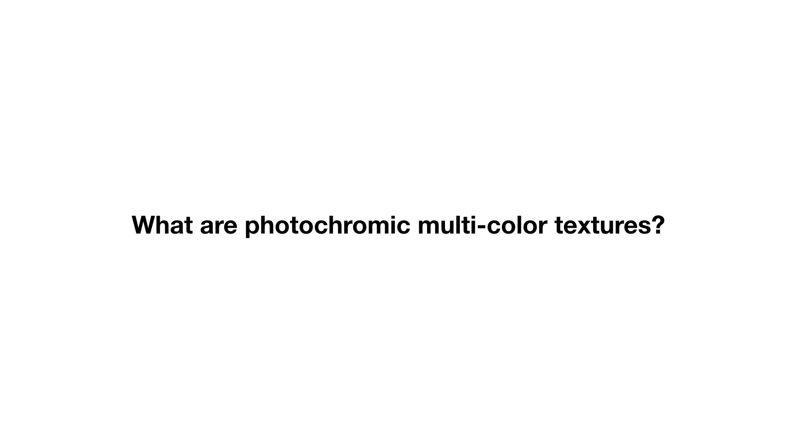
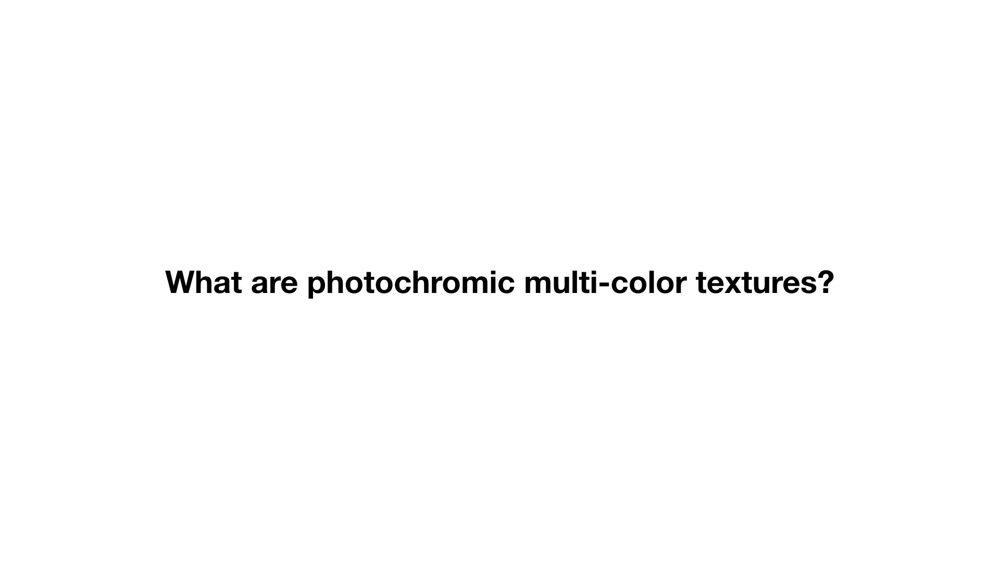
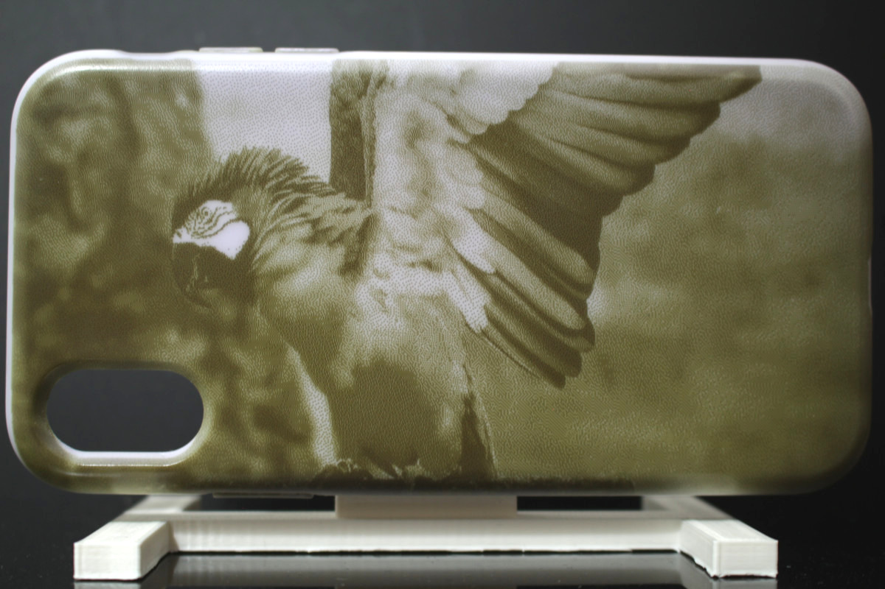

Publication
Michael Wessely, Yuhua Jin, Cattalyya Nuengsigkapian, Aleksei Kashapov, Isabel Qamar, Dzimitry Tsetserukou, Stefanie Mueller.
ChromoUpdate: Fast Design Iteration of Photochromic ColorTextures Using Grayscale Previews and Local Color Updates
[To appear] In Proceedings of CHI ’21.
PDF Pre-print Video Talk
Video
Talk
Slides
 



ChromoUpdate: Fast Design Iteration of Photochromic ColorTextures Using Grayscale Previews and Local Color Updates
ChromoUpdate is a texture transfer system for fast design iteration. For the early stages of design, ChromoUpdate provides a fast grayscale preview that enables a texture to be transferred in under one minute. Once designers are satisfied with the grayscale texture, ChromoUpdate supports designers in coloring the texture by transitioning individual pixels directly to a desired target color. Finally, if designers need to make a change to the color texture already transferred, ChromoUpdate can quickly transition individual pixels from one color to a new target color. ChromoUpdate accomplishes this by (1) using a UV projector rather than a UV LED, which enables pixels to be saturated individually rather than resetting the entire texture to black, and (2) providing two new texture transfer algorithms that allow for fast grayscale previews and color-to-color transitions. Our evaluation shows a significant increase in texture transfer speed for both the grayscale preview (89%) and color-to-color updates (11%).
Introduction
Today, designers can quickly iterate on the visual design of an object by applying digital textures to a virtual 3D model. However, such quick iteration is not yet possible on a physical object without the additional manual labor required for repainting it. The ability to change the color of a physical object quickly and repeatedly is part of the long-term vision of programmable matter (ClayTronics, Radical Atoms). Once accomplished, designers will be able to try out different visual designs directly on the physical object by rapidly updating the physical color texture during design iteration.
One promising approach to repeatedly change an object's color is through the use of photochromic inks (Ferrara et al. ) that can switch from transparent to colored when exposed to light of a certain wavelength. Since the inks are bi-stable, the color remains even when the light source is removed. The process is fully reversible, therefore enabling users to recolor objects as many times as they desire. Although early work on photochromic inks was limited to one color only (e.g., Photochromic Carpet), researchers recently showed how to create high-resolution multi-color textures using a mixture of cyan, magenta, and yellow (CMY) photochromic dyes (PhotoChromeleon).
While PhotoChromeleon demonstrated how to create multi-color textures that can be updated repeatedly, the process of creating a new texture is slow. To transfer a new design, PhotoChromeleon takes between 20-60 minutes depending on the colors in the texture and the object geometry onto which the texture is projected. Although such a time frame is sufficient when objects only need to be recolored daily, for instance, when users customize the appearance of their items, such as clothing (Shimmering Flowers), shoes (ShaderPrinter, Vitaboot), and other wearables (AnimSkin, ChromoSkin), it is not suitable for fast design iteration in which designers need to work through different visual textures in a short amount of time.
In PhotoChromeleon, when the appearance of the object is updated, the entire texture must be erased before a new texture can be applied. Thus, even if only a small part of the texture changes (e.g., a single pixel), the entire surface has to be re-programmed from scratch. Erasing the entire texture is necessary in PhotoChromeleonsince the system only contains a single UV LED, which cannot saturate pixels individually. As a result, PhotoChromeleons texture transfer algorithm must fully saturate the entire texture to black before it can create the new color for each pixel by desaturating the individual color channels of the photochromic material using R, G, B light from the visible light projector. In addition, since PhotoChromeleonwas not developed with a focus on fast design iteration, it does not contain a fast preview mechanism that allows designers to evaluate a texture's overall look on the object without creating the texture in full color fidelity.
In this paper, we present a new method called ChromoUpdatethat enables fast texture updates. In contrast to PhotoChromeleon, ChromoUpdateuses a UV projector rather than a UV LED, which enables the saturation of individual pixels. Using the capabilities of the UV projector, ChromoUpdateis able to provide two fast texture transfer functions that are not possible when a UV LED is used: (1) a grayscale preview function that enables previewing a texture in under one minute (Figure Figure 1a), and (2) a color-to-color texture transfer algorithm that transitions pixels directly from their current color to a new target color, thereby enabling local updates of the color texture (Figure Figure 1b). Our evaluation shows a significant increase in texture transfer speed for both the grayscale preview (created in 1 minute) and the color-to-color updates (speed up of 11%) when compared to creating the same texture with the method from prior work.
In summary, we contribute:
- a hardware setup that uses a UV projector instead of a UV LED, which allows saturation of individual pixels within a photochromic texture;
- a fast grayscale preview function based on dithering and optimized for output with a UV projector;
- a color-to-color optimization algorithm that transitions individual pixels directly from one color to another;
- a technical evaluation of the texture transfer speed of the grayscale preview (created in 1 minute) and the color-to-color texture transfer (11% speed-up);
We begin by summarizing the related work on photochromic systems. We then detail how we selected and mounted the UV projector for saturating the dyes and how we calibrated it with the visible light projector used for desaturating the dyes. We describe the changes we made to the photochromic coating to accelerate the reprogramming times and explain how we determined the saturation and desaturation times of the new photochromic mixture when exposed to UV and visible light, which is required as input for our texture transfer algorithms. We illustrate how a fast grayscale preview can be achieved even though the UV projector is not able to create grayscale pixels directly, and how we use dithering of black pixels to create the appearance of grayscale images. We then discuss our new color-to-color transfer algorithm, which is enabled by creating an optimization that starts at a target color X rather than at black, as in prior work. Finally, we conclude the paper with a technical evaluation of the texture transfer speed, along with application examples that illustrate how our system supports fast design iteration, and discuss avenues for future work.
ChromoUpdate
The goal of ChromoUpdate is to support fast design iteration by providing quick texture previews and local updates when a designer needs to explore visual textures on a physical object. To this end, we provide two functions: (1) a fast grayscale preview, and (2) a color-to-color transition on a per-pixel basis. Both functions are enabled by using a UV projector rather than a single UV LED, which allows ChromoUpdate to saturate pixels individually.
Grayscale preview
The per-pixel saturation enabled by the UV projector allows ChromoUpdate to create high-resolution grayscale textures in one minute (Figure 2). In contrast, prior work that used a UV LED instead of the UV projector requires 9 min 19s to accomplish the same outcome. This is due to the UV LED which requires the entire texture to first be saturated to black (1 min) before a time-consuming desaturation step (8 min 19s) with the visible light projector is applied to create the image. In contrast, by using a UV projector, we can create the texture without the lengthy desaturation step by saturating individual pixels directly.

Figure 2. Grayscale preview: Physical result of projecting a dithered grayscale image onto a physical sample using only the UV projector.
Challenges of creating grayscale textures: A UV projector cannot create grayscale textures, i.e. different shades of gray, from a CMY multi-color photochromic material directly. When saturating a pixel, the UV projector instead causes the pixel to transition along a range of different colors before finally reaching black at full saturation (Figure 2). This occurs because the cyan, magenta, and yellow color channels in the photochromic material increase in saturation at different speeds when exposed to UV light (yellow requires 7s, cyan 40s, and magenta 60s to reach full saturation). Thus, the pixels of intermediate saturation are not gray but rather have a color that varies depending on the length of the exposure. Therefore, we cannot create grayscale textures by saturating pixels to intermediate saturation levels. Instead, we use a method that creates grayscale images only from fully saturated (black) and fully desaturated (white) pixels.\\
Dithering (black/white pixels): To achieve the perception of gray-scale textures using only black and white pixels, we use an image processing technique called dithering When using dithering to create different gray tones, darker grays are achieved by grouping more black pixels in an area, and brighter grays by grouping less black pixels in an area (Figure 4). Once ChromoUpdate has converted the texture into the dithered pattern, transferring the grayscale texture onto a white object only requires that the UV projector projects the dithered texture onto the object's geometry. The black pixels in the dithered texture will create UV light and thus the corresponding areas in the physical texture will saturate and turn black, while the white pixels in the dithered texture will create no UV light and thus do not saturate.
Color-to-color transition
The per-pixel saturation permitted through the use of a UV projector in combination with a new optimization algorithm also enables ChromoUpdate to transition color pixels directly from one color to a new target color (Figure 6). This includes transitions from (a) an initially white texture to a desired color texture, (b) a grayscale preview texture to a desired color texture, and (c) an existing color texture to a new color texture. In contrast, prior work was not capable of achieving these transitions since it required the entire texture to be saturated to black with the UV LED before a new color could be created using the desaturation capabilities of the visible light projector. Transitioning directly from one color to another is more desirable than first saturating to black because it only saturates the color to the level needed and thus subsequently requires less desaturation, which makes both steps faster.\\
Speed-up achieved with color-to-color transition during design iteration: In our technical evaluation, both the white-to-color and color-to-color transitions were faster than in prior work. The white-to-color transition led to a speed-up of 33% over prior work, while the color-to-color transition led to an average speed-up of 11% over prior work. ChromoUpdate achieves this speed-up because it saturates pixels only to the level needed, therefore saving time in the desaturation step.

UV projector: Individually saturating colored pixels
We use the same hardware setup as PhotoChromeleon , i.e. the same visible light projector and rotating platform, but we replaced the UV LED with a UV projector (LUXBEAM LRS-HD-UV). Before adding the UV projector to our system, we first ensured that its light spectrum and intensity match the requirements of our photochromic dyes. We then mounted the UV projector at a position that maximizes the overlap of its projection with the visible light projector, while also maximizing its own overall projection size, and setting its distance such that its focal length is on the platform. Finally, we calibrated the output of the UV projector with that of the visible light projector to ensure that saturation and desaturation commands sent to both projectors target the same pixels.
Light spectrum and intensity of the UV projector
We selected our projector (model: LUXBEAM LRS-UV-HD) based on three requirements: First, the output spectrum of the UV projector must overlap with the absorption spectra of the cyan, magenta, and yellow photochromic dyes. The greater the overlap between the output spectrum of the UV projector and the absorption spectra of the dyes, the faster the saturation of the dyes. We used a spectrometer (ThorLabs CCS200) to measure the output spectrum of the UV projector and took the data on the absorption spectra of the photochromic dyes from the data sheets that are provided by the manufacturer (Yamada Chemicals). As seen in Figure 7, the output spectrum of the UV projector has a peak at 372nm, but also produces light output between 360nm and 400nm, with significantly less light intensity the further the wavelengths are from the peak.
While the spectrum of the UV projector has the largest overlap with the yellow dye, it also overlaps to a lesser extent with the cyan and magenta dyes. The effect of this becomes visible in our technical evaluation of saturation speed, where the yellow dye only needs 6s of UV radiation to fully saturate, while the cyan and magenta dyes require 40s and 60s, respectively. A UV projector with a deeper UV light source would further accelerate the dye saturation since the absorption peaks of the dyes lie at wavelengths significantly below 360nm. However, we opted for a 365nm projector as they are more commonly used in industry and hence are more readily available.
Mounting the UV projector
Figure 8 shows the position of the UV projector with respect to the visible light projector and the object on the platform.
Stacking both projectors: To bring the origin of the UV projector as close as possible to the origin of the visible light projector, we stacked both projectors on top of one another.
Distance to the platform: To minimize the size of the hardware setup, we aimed to place the UV projector and visible light projector at the same distance to the platform. To enable this, the lenses of the UV and visible light projectors need to have a similar focal length. Since the focal length is determined by the lens inside the projector, we reviewed the lenses available for the UV projector to find one that matches the focal length of the visible light projector. With the visible light projector focal length being 30cm, we found that the UV projector lens LRS-90n with a focal length of 37.5cm was the closest approximation. Because of the shape of the UV projector, we had to mount the UV projector slightly behind the visible light projector at a distance of 7.5cm as shown in Figure 8.
Projector mounting heights: To determine the mounting heights of the projectors, we analyzed both projectors' frustums and their overlap with the rotating platform. A projector's frustum determines how the light spreads outside the projector and thus how much the projection overlaps with the rotating platform (Figure 8). To measure the frustums of both the UV and visible light projectors, we projected a white screen on a flat surface at two distances (36cm and 41cm) and captured the position of the corner points of the projections. We derived the origin of the frustum by computing the vector between the four corner points of the two projections and then determined the intersection point of the four vectors inside the projector. Figure 8 shows the results for both projectors' origins and frustum shapes.
The origin of projection from the visible light projector is 2cm behind the lens and the frustum reaches a width of 26.8cm and a height of 15cm, which is sufficient for covering the 17cm wide platform and allows for medium-sized objects. As seen in Figure 8, the visible light projector's frustum is shaped in a way that light exits straight ahead or upwards. Thus, the visible light projector can be mounted at the same height as the platform with the object.
The origin of projection from the UV projector is 5cm behind the lens and the frustum has a width of 17.2cm and a height of 9.7cm at the position of the platform, which is similar to the visible light projector and is sufficient to cover the entire 17cm platform. However, since the UV projector's frustum is symmetric, we had to mount the UV projector at a height of 4cm since the projector would otherwise project half the image underneath the platform.
UV projector angle: We angled the UV projector by 4.5^\circ to have its light output cover the rotating platform from the bottom to the top. Angling the UV projector, however, led to a collision with the visible light projectors casing. To solve this, we removed the top casing of the visible light projector, which created additional space.
Fine-tuning the projectors' positions: After adjusting the distance to the platform as well as the height and angle of the UV projector, we further fine-tuned the physical alignment between both projectors by projecting a grid pattern from each projector. We projected the grid pattern onto a flat physical object and compensated for visible deviations between the two projections by adjusting the position and angle of the UV projector manually.
Matching pixel densities between UV and visible light projector
Both the UV and the visible light projector have a pixel resolution of 1920x1080. However, since each projector’s focal distance, origin and frustum differ, the resulting projections have different sizes and thus different pixel densities. To compute the pixel density of each projection, we divided the overall pixel resolution of each projector by the size of the projection on the platform. The width of the UV projection on the platform is 17.2cm and for the visible light projection 26.8cm. Therefore, the pixel density of the UV light projector is 90\mu m and the pixel density of the visible light projector is 140\mu m. Since the pixel density of the visible light projector is almost twice as low as the density of the UV projector, we compensate for this computationally by doubling the pixel size of the visible light projector in our software. This means that each projected pixel of the UV projector equals two projected pixels from the visible light projector in our image projection system. While this does not lead to a perfect alignment, it ensures that each pixel of the UV projector matches at least one pixel from the visible light projector.
Photochromic dye mixture and saturation/desaturation times
While prior work used a photochromic coating with a C:M:Y ratio of 1:1:6, we modified the dye ratio to be 1:1:3, i.e. decreased the amount of yellow in the mixture. We found that this dye ratio offers a slightly darker color when at full saturation, i.e. a better approximation of black and thus better contrast in the resulting photochromic textures. To create the photochromic coating, we followed the same methodology as outlined in PhotoChromeleon , but with the updated 1:1:3 ratio, and after mixing sprayed it onto the objects.
Since prior work did not provide saturation data, we conducted an experiment to measure the saturation of each dye over time while exposed to UV light. In addition, since we modified the dye ratio of the photochromic coating, we also remeasured the desaturation of the photochromic dyes over time. Remeasuring the desaturation data also has the added benefit that the data is acquired on the same photochromic sample used for saturation, which avoids confounding factors, such as the quality of the spray coating.
Saturation speed over time: UV projector
To measure the saturation speed of each dye, we captured the saturation times of each photochromic dye (cyan, magenta, yellow) when exposed to UV light. For this, we 3D printed three cubes, one for each of the C, M, Y color channels. The cubes had a side length of 4cm and were printed from white PLA filament using an Ultimaker 3. After 3D printing, we coated the cubes first with a layer of black paint and then a layer of white paint, to avoid any subsurface scattering of the printing material, as outlined in PhotoChromeleon . We then airbrushed cyan, magenta, and yellow photochromic coatings in the ratio of 1:1:3 onto the three white cubes. To ensure the coatings were fully desaturated prior to the experiment, we placed each cube in front of the visible light projector and shone visible light onto them for 20 minutes. Once all cubes were fully desaturated, we started the saturation experiment.
We shone UV light for 90 seconds on each cube in order to quantify the effect of UV light on each dye. We turned the UV projector off every 3 seconds, took a picture using a photo camera (Canon T6i), and then turned the UV projector back on. We repeated this process until the UV irradiation on the cube reached 90 seconds in total, which our preliminary experiments had shown is sufficient to completely saturate each dye.
After taking the pictures, we processed the captured photos by first computing the mean value of the cube’s surface color, then converting it to the HSV color space, and finally plotting the resulting saturation value (S). Figure 9 shows how the saturation of each color increases with an increase in UV illumination time. The maximum saturation of each dye is reached for yellow in 7s, for cyan in 40s, and for magenta in 60s. Note that the transition from one color to another rarely requires full saturation of a channel but rather a small saturation increase, which yields a fraction of the above saturation times.
Desaturation speed over time: Visible light projector
To measure the desaturation speed, we repeated the above experiment but used the visible light projector instead. To ensure the coatings were fully saturated prior to the experiment, we placed each cube in front of our UV projector and shone UV light on them for 60 seconds, which is the maximum saturation time needed to fully saturate the dye with the slowest saturation time (i.e., magenta) as discussed in the previous section. Once all cubes were fully saturated, we started the desaturation experiment by shining a bar of red, green, and blue light from the visible light projector onto each cube to quantify the effect of the light on each dye in the same way as the desaturation experiment in PhotoChromeleon . The bars had decreasing exposure time from right to left. This results in a saturation gradient, which we captured using the same photo camera as in the previous experiment.
To determine the desaturation after a certain time of exposure to visible light, we sampled each gradient image with 40 data points by partitioning the gradient in 40 equidistant regions and computed the mean saturation value (S) in the HSV color representation. Figure 10 shows the processed gradient data. Next, we describe how we used these saturation and desaturation data points as input to our fast gray-scale preview and color-to-color transition algorithms.

Grayscale Preview Algorithm
Our grayscale preview algorithm creates the dithered pattern using a dithering method by Floyd and Steinberg and applies dithering to the projection image rather than the 3D model texture to avoid aliasing.
Applying dithering onto the projection image to avoid aliasing
Initially, we had considered converting the 3D model texture in the 3D editor into a dithered pattern. However, this leads to aliasing artifacts at the time of projection. This occurs because the resolution of the UV projector (1920x1080 pixel) tends to be smaller than many high-resolution 3D model textures. As a result, one black pixel in a dithered 3D model texture may not necessarily correspond to one black pixel in the projected image. Because the high-resolution 3D model texture is compressed when downsized to the resolution of the UV projector, some black pixels disappear, which leads to aliasing artifacts. We therefore do not apply dithering to the 3D model texture and instead apply it to the UV projection image at the end of the pipeline. We first create the colored projection image for the UV projector, which as a result is already downsized and has the correct resolution (1920x1080 pixels). We then convert the color image into a grayscale image, and finally apply dithering. When the dithered image is now projected, each black pixel in the image corresponds to exactly one black pixel in the projection, avoiding aliasing artifacts. The conversion of the images is implemented in the software Processing.
Grayscale projection times
The total UV projection time required to create the dithered grayscale texture can be derived from the saturation graph in Figure 9. For a black pixel, all three colors: cyan, magenta, and yellow must be fully saturated. Magenta takes the longest to fully saturate (60s), therefore, the time to create a dithered texture is 60s.
Color-to-color transition algorithm
We developed a new optimization algorithm that transitions a pixel directly from its current color to a new target color without the need to reset it to black. We extend the approach in PhotoChromeleon by starting the optimization at a given color X, rather than always starting from black. Since our goal is to transition from the given color X to a new target color Y using the shortest possible illumination time, our optimization only saturates the texture with the UV light to the level needed to achieve the target color. In contrast to the optimization algorithm from PhotoChromeleon , which used a fixed amount of time for the UV light to saturate the texture to black, our optimization algorithm computes the specific saturation increase needed to transition directly from one color to another.
Inputs and outputs of the algorithm
Our algorithm takes as input the saturation level of each dye over time when exposed to light from the UV and visible light projectors. It then outputs the illumination times for both the UV and visible light projectors, i.e. how long each pixel needs to be irradiated by the UV light and the RGB LEDs from the visible light projector to achieve the desired target color.
Optimization
We use the following optimization to minimize the error between the color created after illuminating the photochromic coating with UV and RGB light (C(t_{rgb},t_{uv})), and the desired target color (Y). min F(t_{uv},t_{rgb}) = |C(t_{uv}, t_{rgb}) - Y | ^2
To minimize the error, we determine the t_{rgb} and t_{uv} that result in the color that is closest to the target color Y. To accomplish this, our algorithm first saturates the dyes for t_{uv} seconds until the saturation level of each C, M, Y color channel is above the saturation level of the C, M, Y color channels of the target color Y, and then desaturates the dyes for t_{rgb} seconds until the closest color match is achieved.
Let's further define the saturation function S(U) which returns the illumination time necessary to saturate with UV light a fully desaturated dye to a given color U. The inverse function S^{-1}(t_{uv}) takes the illumination time t_{uv} with UV light and returns the resulting color U. These function are given from the saturation graph in Figure 9. In the same way, we can define the desaturation function D(U) which returns the time t_{rgb} necessary to desaturate a black sample to a given color U. The inverse function D^{-1}(t_{rgb}) takes the desaturation time with RGB light and returns the resulting color U. The function D(U) and its inverse is given by the desaturation graphs in Figure 10.
In our optimization, we always first saturate with t_{uv} and then subsequently desaturate with t_{rgb}.
Saturation time of UV projector t_{uv} To compute how long each photochromic color channel must be exposed to UV light t_{uv} to reach the target saturation level, we use the following formula:
\[ t_{j,UV} = S_j(Y_j)-S_j(X_j) j \in \{c, m, y\} \]
The function S(Y_j) returns the UV exposure times needed for each photochromic dye to reach the saturation level required for creating the target color Y from complete desaturation as explained in the previous section. The function can be derived directly from our evaluation of saturation times from Figure 9. However, since the target color Y is not created from full desaturation but rather from an existing color X, we need to subtract the UV exposure times for each photochromic dye computed by S(X_j) that the photochromic material was already exposed to when creating the current color X. Similar to S(Y_j), the times for S(X_j) can be derived from Figure 9. The overall UV exposure time required to saturate a photochromic color channel to a desired target level Y_j when starting from an existing saturation level X_j is then t_{j,UV} = S_j(Y_j)-S_j(X_j).
Although each color channel requires a different UV exposure time to reach the optimal target saturation, we can only saturate all dyes at the same time since we only have one UV light source, i.e. the UV projector. Thus, after computing t_{uv} for each individual color channel, we use the longest UV exposure time t_{uv} required by any of the three photochromic dyes to go from its current color X to the goal color Y. We can express this in the form of:
\[ t_{uv} = max(S_j(Y_j)-S_j(X_j)) j \in \{c, m, y\} \]
Desaturation time of VL projector t_{rgb :} We compute the desaturation time by minimizing t_{rgb}. Since t_{uv} is given by the previous computation step we denote the dye color after saturation by A = S^{-1}(t_{uv}). We compute the color C_j(t_{uv}, t_{rgb}) that results from different desaturation times of t_{rgb} onto the intermediate color A.
\[ C_j(t_{uv}, t_{rgb}) = D^{-1}_{r,j}(D_r(A) + t_r) + D^{-1}_{g,j}(D_g(A) + t_g) + D^{-1}_{b,j}(D_b(A) + t_b) \]
with j \in \{c, m, y\} . The inverse desaturation functions D^{-1}_{rgb,j}(t) take as input the desaturation times necessary to get color A plus the unknown variable t_{rgb} and returns the saturation level achieved after this amount of exposure. Using C_j(t_{uv}, t_{rgb}) and minimizing for t_{rgb} computes the desaturation times to approximate target color Y. We used a gradient descent scheme to find a solution in a least squares sense.
Evaluation: Texture transfer speed and projector alignment
We evaluated how quickly designers can iterate on a photochromic texture with ChromoUpdate by measuring the texture transfer speed at each step in the design iteration process, i.e. during different types of grayscale and color transitions. We also evaluated the resolution of the resulting textures due to the added complexity of having two projectors in ChromoUpdate that need to be calibrated with one another.
We compare our texture transfer times to the prior work PhotoChromeleon . To avoid confounding factors introduced by changes in the hardware setup, such as differing light intensities between the UV LED from PhotoChromeleon and the UV projector in ChromoUpdate we ran the experiments and collected the data for ChromoUpdate and PhotoChromeleon on the new UV projector setup. When using the algorithm from PhotoChromeleon , we fully saturated all pixels with the UV projector to emulate the UV LED. For the new ChromoUpdate algorithm, we only saturated individual pixels with the UV projector as determined by our optimization.
Grayscale preview transfer speeds
We evaluated the following transitions for grayscale previews: (1) creating an initial grayscale preview from scratch (i.e. a fully desaturated sample), and (2) updating an existing grayscale preview with a different grayscale image.\\
(1) Creating an initial grayscale preview: When creating an initial grayscale preview from a fully desaturated sample, the texture transfer speed is solely determined by how fast the UV projector can saturate each of the cyan, magenta, and yellow color channels in the photochromic material to full saturation, in order to create the black pixels for the dithering effect. No desaturation step is needed since the pixels that need to be saturated to black can be targeted individually with the UV projector while the other pixels remain white. From our saturation experiments, we have already determined that the UV projector is able to reach maximum saturation of each dye within 7 seconds for yellow, 40 seconds for cyan, and 60 seconds for magenta (Figure 9). Since each dye has to be fully saturated before the UV projection can be turned off, the overall texture transfer time for an initial grayscale preview is 60 seconds. In comparison, achieving a similar effect with prior work, i.e. the system setup of PhotoChromeleon , takes significantly longer since it requires all pixels to be saturated to black before subsequently desaturating the pixels that need to be white. Since desaturating a pixel back to white requires all three color channels (cyan, magenta, and yellow) to be fully desaturated, the overall time for creating a white pixel equals the longest desaturation time among the three color channels. As can be seen in the desaturation graph (Figure 10), cyan takes the longest time to fully desaturate under white light (8 min 19s). Thus, including the one minute of saturation time from the UV saturation yields 9min 19s in total for the system from prior work.\\
(2) Updating a grayscale preview with a different grayscale image: As shown in Figure 5, updating a grayscale preview can result in either only black pixels being added (i.e., when a new element is added in a previously white area), white pixels being added (i.e., when an element is erased), or both. When only black pixels are added, the update times are the same as when creating an initial grayscale texture from scratch, i.e. 60s. However, when new white pixels are required, ChromoUpdate needs to fully desaturate the black pixels to achieve white, which takes 9 min 19s.\\
(3) Updating a grayscale preview to a colored image: We found that updating a grayscale preview texture to a full color texture requires the same reprogramming time as Photo-Chromeleon . The reason for this is that grayscale textures contain fully saturated black pixels in all non-white areas of the texture. Desaturating a fully saturated black pixel to a target color is representative of the texture transfer approach that was shown in the prior work Photo-Chromeleon , which always starts from a black texture. Since in the texture all pixels are black, i.e. fully saturated, ChromoUpdate's main benefit, i.e. its ability to saturate pixel's individually to only the saturation level needed, cannot be applied and thus no further speed up is achieved.
Color-to-color transfer speed
We evaluated the following cases for the color-to-color transitions: (1) creating an initial color texture from scratch (i.e. a fully desaturated sample), and (2) updating an existing color texture with a different color texture.\\
(1) Creating an initial color texture: To measure how quickly ChromoUpdate can create a color texture from a fully desaturated sample, we reproduced the three phone case textures from PhotoChromeleon . We used the UV projector to saturate each pixel only to the saturation level needed, and then used the visible light projector to desaturate each color channel in the pixel until the final target color was achieved. In contrast, PhotoChromeleon saturates the entire texture to black and then desaturates starting from the black pixel at full saturation.
We found that ChromoUpdate s method leads to an increase in texture transfer speed, with the Bird Texture taking only 19.6min vs. 40min (51% faster), the Sunset Texture taking only 21min compared to 34min (38% faster), and the Tokyo Texture taking only 21.6min vs. 24min (10% faster). Thus, across these textures, ChromoUpdate led to a 33% speed up on average.
Since the amount of speed up varied between different textures, we investigated what led to the main time savings. We found that the increase in speed was mainly attributed to shades of yellow in the texture. In prior work, the entire texture was first saturated to black (cyan, magenta, and yellow at full saturation) and then yellow pixels in the texture were created by desaturating cyan and magenta, which is a time consuming step. For instance, if the color CMY (30%,30%,80%) with a significant amount of yellow needed to be created, cyan and magenta had to be desaturated from full saturation down to 30%, which requires shining visible light for a duration of 600s. In contrast, our method takes advantage of the rapid saturation speed of the yellow dye: While after 3 seconds of UV exposure time, the yellow dye is at 80% saturation, the cyan and magenta dye have only reached 46% and 38% saturation, respectively. Desaturating these partially saturated cyan and magenta dyes is faster, requiring only 200 seconds of visible light exposure. Thus, for this example of CMY(30%,30%,80%), ChromoUpdate achieves a speed up of 66% when compared to prior work rather than the average speed-up of 33% as was the case for our evaluated textures.\\
(2) Color-to-color transfer speed: To quantify the color-to-color transition speed, we again used the three phone case textures from PhotoChromeleon but this time directly transitioned them from one color texture to another. Before creating a new texture, prior work had to first erase the entire existing texture with UV light for 60 seconds and then reprogram the texture from scratch. We started with the sunset texture and transitioned it to the bird texture. We found that the color-to-color transition with ChromoUpdate was faster than creating the Bird texture from scratch with PhotoChromeleon i.e. 33.1min vs. 40min, which is a 17% speed-up. Next, we took the Bird texture and transitioned it to the Tokyo texture. In this case, we found that the color-to-color transition from ChromoUpdate took almost as long as creating the Tokyo texture from scratch with PhotoChromeleon i.e. 23.9min vs. 24min. Finally, we transitioned the Tokyo back to the Sunset texture. We found that the color-to-color transition from ChromoUpdate was faster than creating the Sunset texture from scratch with PhotoChromeleon i.e. 28.7min vs. 34min, which is a 16% speed-up. In summary, the color-to-color transition was in all cases either faster than the method used in the prior work or took the same time PhotoChromeleon (on average: 11%, best case: 17%, worst case: 0%).
In starting from a desaturated sample, our method benefits greatly from the quick saturation of the yellow dye in yellow regions and the resulting low saturation levels of cyan and magenta, which can be quickly desaturated subsequently. However, this benefit disappears partially when transitioning from an already existing texture to a new texture because some yellow regions in the new texture might already have high saturation levels for cyan and magenta and thus these need to be desaturated, which takes more time than creating the yellow color from scratch.
Effect of slanted surfaces on transfer speed
As mentioned in PhotoChromeleon , the texture transfer time also depends on the object geometry, i.e. a flat surface perpendicular to the projector has the fastest texture transfer time, while slanted object geometries slow down the texture transfer since less light hits the surface. We stop the illumination at a maximal surface angle of 45\textdegree, which doubles the recoloring time. We therefore conclude that the time of an initial grayscale preview is between 1-2 minutes in our system and between 9min 19s - 18min 38s depending on the object geometry.
Projector alignment precision
We also evaluated the precision of the alignment between the UV projector and the visible light projector. A precise alignment is crucial in our system to enable saturation and desaturation of the same pixel with the two projectors. To evaluate the alignment precision, we projected a grid pattern (Figure 11a) from both projectors onto a plane that was mounted in the center of the platform. The plane was perpendicular to the projectors and measured 11cm x 7cm.
We started with a partially saturated plane: First, we projected the grid with the visible light projector until full desaturation of the grid lines, which as a result appeared white on the partially saturated plane (Figure 11b). Next, we projected the same grid pattern with the UV projector onto the plane until full saturation of the grid lines, which as a result appeared black on the partially saturated plane (Figure 11c). If both projectors are aligned, the resulting plane should only show black grid lines with no white pixels surrounding them. Any remaining white pixels around the grid lines indicate an imprecision, i.e. a deviation from how well the projectors are calibrated to one another. We took a photo with a camera (Canon EOS700D) and measured the deviation of the grid lines with a ruler as shown in Figure 11d/e.
We found a deviation of 0.5mm horizontally and 0.35mm vertically when measuring at the outer ends of the projection, which are subject to the largest alignment error. Since the UV projector has a pixel size of 87.5$\mu m$, this implies an offset of up to 6 pixels horizontally (87.5$\mu m$ * 6pixels = 0.525mm) and 4 pixels vertically (87.5$\mu m$ * 4pixels = 0.35mm) in the worst case. However, the evaluation shows that the projection alignment is accurate for most projection angles.
User Interface
To facilitate design iteration with ChromoUpdate we extended the user interface from PhotoChromeleon . Designers start by loading a 3D model into the view along with a desired color texture.
Designers then use the `Pre-Compute Projections' button, which starts our algorithm to compute the projection mapping for both the UV and visible light projectors given the specific object geometry the designer loaded. The projection mapping is only done once for an object geometry and then stored in a file for reuse with different visual textures.
To create an initial grayscale preview texture, designers can use the `Preview' button, which converts the loaded color pattern into a dithered black/white pattern that is subsequently transferred onto the object. To update an already existing grayscale preview texture, designers can load a new texture onto the 3D model and then use the `Update Preview' button. Once designers are ready to transition to color, they can use the 'Start Coloring' button, which transitions areas of a grayscale texture to a color texture. This updates the dithering pattern with the actual colors for each pixel location. Finally, designers can use the `Update Coloring' button to transition from an existing color texture to a new color texture. The 'Clear' button erases the entire texture by desaturing the photochromic coating with white light.
Implementation
Our user interface is implemented as a plugin to the 3D editor Blender. The projection mapping step takes up to 7 minutes depending on the size of the object but only has to be executed once per object since the projection mapping can be reused for different color textures. When the designer loads a new texture, ChromoUpdate automatically computes which areas have changed using the difference between the existing pixel colors and the new pixel colors. For each pixel that has changed, ChromoUpdate then computes the illumination times and inputs the data into a pipeline based on the software Processing. The Processing pipeline computes the projection animation, which is then executed on the UV and/or visible light projectors to create the desired target color on the physical object.
Application Scenarios
We demonstrate ChromoUpdate with two application scenarios. The first scenario makes use of the fast grayscale preview function in an iterative design scenario, whereas the second shows a color-to-color updates with an ambient IoT device.
Iterative design
In this scenario, a designer who works for a phone case manufacturer wants to explore new ideas for an IPhone XR case (length: 15.3 cm, width: 7.8 cm). The designer starts by loading a digital model of the phone case into the 3D editor and also opens a texture design program (e.g., Adobe Photoshop) to create a new texture. The designer wants to explore a mandala design and places it in the lower right corner of the phone case. To get an initial impression, the designer uses the grayscale preview function to transfer the digital design in 60 seconds to the phone case (Figure 13a). The designer takes out the phone case and attaches it to the phone to see how it looks. The designer decides to add another mandala to the phone case to even out the overall appearance. The designer mirrors the design onto the other side of on the phone case and uses the fast preview method again to transfer the pattern in just 60 seconds (Figure 13b). Finally, the designer is satisfied with the design and uses the color update function to transfer the grayscale texture directly to a color texture. To see how the phone case looks under different illumination conditions, the designer takes out the phone case. The designer is satisfied and decides to test the design with one of their clients before doing more design iterations.
Updateable IoT device
In this second scenario, a researcher with many meetings per day decides to create an updateable coffee mug that displays the daily schedule. When placed in the ChromoUpdate system in the morning, the mug updates to show the day's meeting schedule, the weather forecast, and also displays the current temperature (Figure 14a).

After a few hours, the researcher received new appointments and wants to update the coffee mug. The researcher places the mug in the projection system which updates the mug to the current schedule and the most recent outside temperature (Figure 14b). This allows the researcher to see the schedule also when they are not in front of the computer or don't have a phone with them.
Discussion
While we demonstrated how to improve the texture transfer speed of photochromic multi-color textures, there are several aspects that can be further improved.
Integrated UV/visible light projector: While we built our system based on two separate projectors, it would be desirable for future work to have one integrated projector with both UV and R,G,B LEDs that can both saturate and desaturate the texture. Using one projector eliminates the alignment issues and problems with mismatching pixel densities that we had to compensate for. In addition, having both light sources be orthogonal to the object rather than at an angle can further speed up the texture transfer.
Refreshing faded out textures: Photochromic dyes fade over time in a bright environment . We plan to add a camera to our system that can detect the current desaturation level and refresh the texture from the faded state to a fully saturated state. This is possible with the new ChromoUpdate algorithm since it can take any faded texture as input and compute the optimal illumination times to convert that texture to its original saturation.
Photochromic textiles: In the future, we plan to apply photochromic material on fibres that can be woven into textiles. To avoid any external projector system, UV and visible light can be transmitted through light-emitting fibers. Our ChromoUpdate algorithm can program these fibres from one color to another color directly and at a higher speed than previous work.
Conclusion
In this paper, we demonstrated how we can speed up the texture transfer times for photochromic color textures to make them more suitable for fast design iteration. In particular, we introduced two new methods, a grayscale preview function and a direct color-to-color transition, both enabled by introducing a UV projector into our setup. We detailed the extended hardware system, introduced an improved photochromic material, and after measuring the saturation and desaturation times under UV and visible light, discussed the implementation of both our algorithms for the grayscale preview and the color-to-color transition. We ended this paper with a technical evaluation showing a significant increase in texture transfer speed, and a discussion of future work, including a new projector setup and the ability to refresh faded textures by adding a camera to the system.